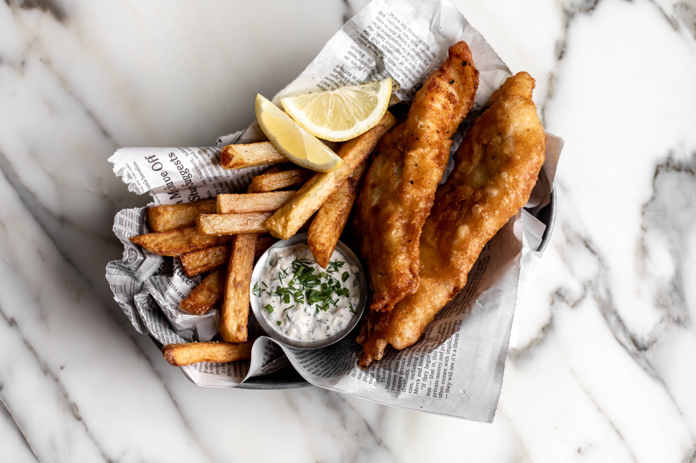

Fish N' Chips

Fish and chips is a beloved British dish that has captured hearts worldwide. The perfect combination of crispy,
golden-brown batter and flaky, tender fish, served alongside fluffy chips, is a true culinary delight.
This classic dish is easy to make at home and perfect for a weeknight dinner or a fun weekend treat.
Whether you prefer cod, haddock, or another firm white fish,
this recipe will guide you through the process of creating a restaurant-quality meal in your own kitchen.
So grab your apron, fire up your fryer, and get ready to indulge in a taste of British tradition.
Ingredients :
- Firm white fish fillets (cod, haddock, or pollock)
- Flour
- Cornstarch
- Baking powder
- Black pepper
- Cold sparkling water
- Cold beer
- Russet potatoes
- Lemon wedges
- Malt vinegar
- Vegetable oil for frying
- Salt
Steps :
- Season fish fillets with salt and pepper
- Dredge in flour, then dip in batter made from flour, cornstarch, baking powder,
salt, pepper, beer, and sparkling water.
- Heat oil in a deep fryer to 375°F (190°C).
- Carefully fry the battered fish until golden brown and crispy.
- Peel and cut potatoes into chips.
- Soak in cold water to remove excess starch.
- Dry the chips thoroughly with paper towels.
- Fry the chips in hot oil until golden brown and crispy.
- Drain the fish and chips on paper towels to remove excess oil.
- Serve immediately with malt vinegar, lemon wedges, and tartar sauce (optional)